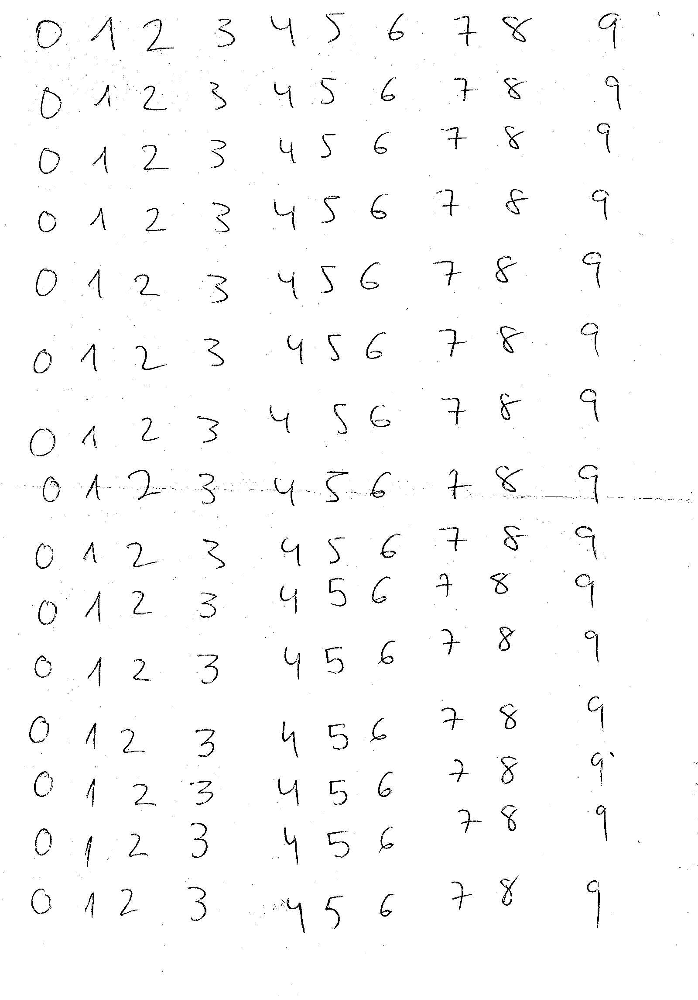

¿Cuántos habéis utilizado la IA para resolver un problema esta semana?
¿Y cuántos sabríais explicar qué ha pasado dentro?
Muchos datos y unas cuantas funciones matemáticas.
Hoy
Dos tipos principales de IA
¿A qué clase pertenece esto?
📧 correo → spam / no spam
🔢 dibujo → un 7
¿Cómo sería algo nuevo de este tipo?
🖼️ imagen · 🎵 audio
📝 LLM: generan texto
Misma estrategia, distinto output.
Una lista cerrada de tokens, cada uno con su número. Se decide antes de entrenar y no cambia.
tabla de embeddings
al azar
Entrenamiento
entrenado · posiciones ilustrativas
| tokens | números por token | |
|---|---|---|
| nuestro juguete | 8 | 2 |
| Llama 3.2 3B | 128.256 | 3.072 |
| GPT-3 (2020) | 50.257 | 12.288 |
| Gemma 3 27B | ≈ 262.000 | 5.376 |
function neurona(entradas, pesos, sesgo) {
var suma = 0;
for (var i = 0; i < entradas.length; i++) {
suma = suma + entradas[i] * pesos[i];
}
return suma + sesgo;
}
× =
× =
+ sesgo
────────────────────────
salida =
function capa(entradas, pesos, sesgos) {
var salidas = [];
for (var n = 0; n < pesos.length; n++) {
salidas.push(neurona(entradas, pesos[n], sesgos[n]));
}
return salidas;
}
Mismas entradas, pesos distintos.
Cada neurona busca un patrón distinto.
el perro come gato
Gana «gato», con un .
var entrada = embeddings[7]; // «come» var oculta = capa(entrada, pesos1, sesgos1); var final = capa(oculta, pesos2, sesgos2); var p = porcentajes(final);
× =
× =
+ sesgo
────────────────────────
puntuación =
Sus entradas: la salida de A y la de B. Las 8 puntuaciones se pasan luego a porcentajes: «gato», .
La capa final tiene una neurona por token del vocabulario: sale un porcentaje para cada uno.
| Tabla de embeddings | 8 tokens × 2 números | 16 |
| Capa oculta | 2 neuronas × (2 entradas + 1 sesgo) | 6 |
| Capa final | 8 neuronas × (2 entradas + 1 sesgo) | 24 |
46
¿Quién decide cada número?
¿Y por qué sale «gato»?
Nadie. Se aprenden.
| capas | parámetros | |
|---|---|---|
| nuestro juguete | 2 | 46 |
| Llama 3.2 3B | 28 | 3.210 millones |
| Gemma 3 27B | 62 | ≈ 27.000 millones |
| GPT-3 (2020) | 96 | 175.000 millones |
el perro come ___carne
| token | generado | debería | error |
|---|---|---|---|
| gato | 0 % | ||
| carne | 100 % | ||
| yo | 0 % | ||
| perro | 0 % | ||
| barco | 0 % | ||
| el | 0 % | ||
| pescado | 0 % | ||
| come | 0 % |
Cada vuelta: los tres ejemplos de la frase, una vez.
Lo que venía después en la propia frase: carne.
Nadie lo etiqueta. La frase trae sus respuestas: el→perro, perro→come, come→carne.
generado
− esperado
Lo que sobra, baja. Lo que falta, sube.
Se corrige un poquito todo lo que intervino: pesos, sesgos y la fila de «come».
Las filas de los otros 7 tokens no estaban en la entrada: no se tocan.
Un solo paso: carne pasa del al .
antes:
ahora:
Al generar no cambia nada: solo se consulta.
genera:
al azar
Entrenamiento
vuelta 0 de 40
genera:
entrenado: los mismos 46 números, ajustados
porcentajes ilustrativos
Nuestro juguete solo mira la última palabra. No basta: la misma fila de la tabla en las tres frases. El vector no sabe en qué frase está.
Cada token se mezcla con los demás: mucho de los que importan, poco del resto.
¿Qué busco?
¿Qué ofrezco?
¿Qué aporto?
Cada token saca los tres con su propia capa.
Mi consulta × tu clave = cuánto me importas. (Una neurona sin sesgo.)
for (var yo = 0; yo < tokens.length; yo++) {
for (var otro = 0; otro < tokens.length; otro++) {
importa[otro] = neurona(consulta[yo], clave[otro], 0);
}
// mezclar los valores de todos según importa
}
Cada token contra todos.
| tokens | comparaciones |
|---|---|
| 1.000 | 1.000.000 |
| 2.000 | 4.000.000 |
Doble de contexto ≈ cuatro veces el trabajo.
No hay piezas nuevas. Solo muchas más.
Y todos esos pesos empiezan al azar.
le di de comer al ___gato
| token | generado |
|---|---|
| gato | |
| perro | |
| sofá | |
| factura |
vocabulario de juguete · porcentajes ilustrativos
El mismo bucle, con miles de frases.
“…al gato” empuja gato hacia arriba.
“…al perro” empuja al revés.
Ningún paso hace gran cosa. Lo que importa es la acumulación.
Nadie ha escrito que perro y gato se parecen.
Para predecir, da casi igual uno que otro. Reciben correcciones parecidas y sus filas acaban juntas.
perro ≈ gato
En la tabla. Fijo.
banco ↔ peces
En la atención. Cambia en cada frase.
le di de comer al
porcentajes ilustrativos
El código que envuelve al modelo sortea uno (no siempre el más probable), lo añade y vuelve a preguntar.
Mismo prompt, respuestas distintas. No es un fallo: hay sorteo.
No sabe cómo acabará la frase cuando la empieza.
No son una avería. Hace lo mismo al acertar que al inventar: plausible, no veraz.
¿Se puede hacer de verdad?
¿Un modelo de texto que valga para algo, en esta sala? No.
¿Uno pequeño? Sí. El bucle es el mismo para cualquier cosa.
28 × 28 = 784
784 números, uno por píxel (0 = papel, 1 = tinta).
Valor esperado: “es un 7”. Viene etiquetado.
60.000 imágenes para entrenar. 10.000 para comprobar, de otras personas.
var oculta = capa(pixeles, pesos1, sesgos1); // 784 → 128 var salida = capa(oculta, pesos2, sesgos2); // 128 → 10
La red de antes, con tamaños reales. Diez salidas: una por dígito.
784 × 128 + 128 + 128 × 10 + 10 =
101.770
parámetros. Todos. Y empiezan al azar.
salida = modelo(imagenes) # generado error = perdida(salida, etiquetas) # − esperado error.backward() # culpa de cada peso optimizador.step() # corregir un poquito
El mismo bucle. De 64 en 64 imágenes:
938 correcciones de todos los pesos por pasada.
Con pesos al azar acertaría 1 de cada 10. Medio minuto después: 97 %.
97,25 %
101.770 parámetros · 26 s
Aplana la imagen: pierde qué píxel está al lado de cuál.
98,57 %
9.098 parámetros · 37 s
Mira la imagen como imagen: busca trazos con filtros pequeños.
11 veces menos parámetros. Acierta más.
Más grande no es mejor: importa que encaje con el problema.

La prueba de verdad.
150 dígitos escritos a mano por mí.
Escaneados, con polvo y un pliegue.
Convolucional
98,57 % → 93,3 %
De dígitos de laboratorio a una hoja real.
Sin preprocesar (solo encoger a 28 × 28):
68,7 %
| acierto | confianza al fallar | |
|---|---|---|
| con preprocesado | 93,3 % | 73,5 % |
| sin él | 68,7 % | 80,7 % |
Acierta menos y falla más convencido.
7 de 15 números bien con un 93,3 % por dígito.
0,933¹⁰ ≈ 0,50
El modelo son 9.098 números. Encontrar los dígitos, recortarlos, normalizarlos, decidir cuándo no fiarse… es código de toda la vida.
El modelo no es el sistema.
Capacidad
El bucle de antes, sobre billones de tokens.
Meses. Miles de GPUs. Decenas de millones.
Forma
Ejemplos instrucción → respuesta.
Unos 13.000 en el trabajo de referencia. Enseña a responder, no conocimiento.
Criterio
Personas eligen la mejor de varias respuestas.
Un modelo de 1.300 M así entrenado fue preferido a uno de 175.000 M.
El modelo base no responde: continúa el texto.
En internet, esas preguntas aparecen en listas de examen.
Afinar = recalcular pesos.
Entrenar pide varias veces más memoria que usarlo.
Y sale otro modelo entero.
LoRA: congelar el modelo y añadir unas matrices pequeñitas.
0,341 %
de los parámetros se entrenan. Tres por mil.
“Buenas, el botón de exportar a PDF no hace nada cuando lo pulso. Un saludo.”
{"categoria": "funcionalidad",
"prioridad": "media"}
99 ejemplos · 190 s de entrenamiento
Adaptador: 1,78 MB (el modelo: ~270 MB)
| Modelo | JSON válido | Categoría | Cat. + prioridad |
|---|---|---|---|
| 135 M sin afinar | 0 / 27 | 0 / 27 | 0 / 27 |
| 135 M + LoRA | 27 / 27 | 12 / 27 | 4 / 27 |
| 360 M sin afinar | 14 / 27 | 6 / 27 | 0 / 27 |
| 360 M + LoRA | 27 / 27 | 16 / 27 | 11 / 27 |
Forma, sí. Criterio, no.
Mismos datos, modelo mayor: el acierto casi se triplica.
Que no lo recuerde:
ponérselo delante.
Cada trozo de documentación es un punto en el mapa. Se buscan los más cercanos a la pregunta.
No se toca ni un peso.
Settings.llm = new Ollama({ model: "llama3.2:3b" });
Settings.embedModel = new OllamaEmbedding({ model: "bge-m3" });
const indice = await VectorStoreIndex.fromDocuments(documentos);
const respuesta = await indice.asQueryEngine().query({ query: pregunta });
Un manual de soporte de 4 documentos + un modelo de 3.000 millones de parámetros, en local, sin tarjeta gráfica.
0,787 frente a 0,240: sabes si hay algo relevante antes de llamar al modelo.
| Cuando… | …en el índice |
|---|---|
| se guarda un nodo | reindexar ese nodo (hook) |
| se borra un nodo | quitarlo del índice |
| pasa el tiempo | reindexado programado (cron) |
| pregunta un usuario | solo fragmentos de nodos que puede ver |
Esto es Drupal de toda la vida.
El modelo es lo fácil.
| Quiero que el modelo… | Herramienta | Coste |
|---|---|---|
| sepa lo que pone en mis datos | RAG | No se entrena |
| responda con mi formato o tono | LoRA | Minutos, MB |
| resuelva algo pequeño y cerrado, rápido y en casa | Modelo propio | Segundos, KB |
| haga cualquier cosa | Modelo comercial | Lo de siempre |
El 99 % de los casos: un modelo comercial. Saber cómo funciona sirve para usarlo mejor.
Más grande no es mejor.
9.098 parámetros ganan a 101.770.
El modelo no es el sistema.
Con preprocesado 93 %, sin él 69 %.
Los errores se multiplican.
0,933¹⁰ ≈ 0,5.
Las dos actitudes que peor le sientan a esta tecnología: creer que es magia y creer que es trivial.
Inteligencia artificial sin artificios
El libro y los ejemplos